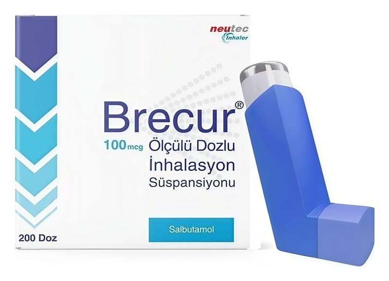

Brecur 100 mcg Ölçülü Dozlu İnhalasyon Süspansiyonu, 200 doz

Ne için kullanılır
KT · Bölüm 1BRECUR, etkin madde olarak salbutamol sülfat içerir. Hızlı etkili bronkodilatörler (bronşları genişletici) adı verilen bir ilaç grubunun üyesidir ve bir kaç dakika içinde akciğerlerdeki hava yollarını genişleterek daha kolay nefes alıp vermenizi sağlar.
BRECUR özel olarak dizayn edilmiş, aktivatörü olan ölçülü dozlu bir cihazdır. İnhaler ile 200 kez püskürtme yapılabilir ve her püskürtme ile 100 mikrogram salbutamol salınır.
Astımda semptom giderici olarak kullanılan rahatlatıcı bir ilaçtır. Kontrol edici ilaç olarak kullanılmamalıdır. Astımda BRECUR’un düzenli kullanımı önerilmez.
BRECUR; Astım, uzun süreli devam eden hava yolları iltihabında (kronik bronşit) ve akciğerde hava yollarının gelişmiş kalıcı hasarlarından (amfizemden) kaynaklanan geri dönüşümlü havayolu tıkanıklıklarında çabuk başlayan etkisiyle bronşların kısa süreli olarak (4 saat) genişletilmesinde, Egzersiz, alerjene maruz kalma gibi astım krizinin ortaya çıkmasına neden olabileceği bilinen koşullarda belirtileri önlemek amacıyla, Kronik obstrüktif (tıkayıcı) akciğer hastalığında (KOAH) belirtileri azaltmak için ve kurtarıcı ilaç olarak kullanılır.
Düzenli tedavide tercih edilmez.
Astımınız aktif ise (örneğin sık semptomlarınız veya alevlenmeleriniz veya kısıtlı fiziksel yetkinliğiniz varsa), doktorunuzu bilgilendiriniz. Astımınızı kontrol altına almak için inhale kortikosteroid gibi bir ilaç kullanmaya başlamanızı isteyebilir.